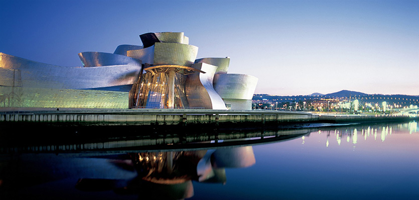
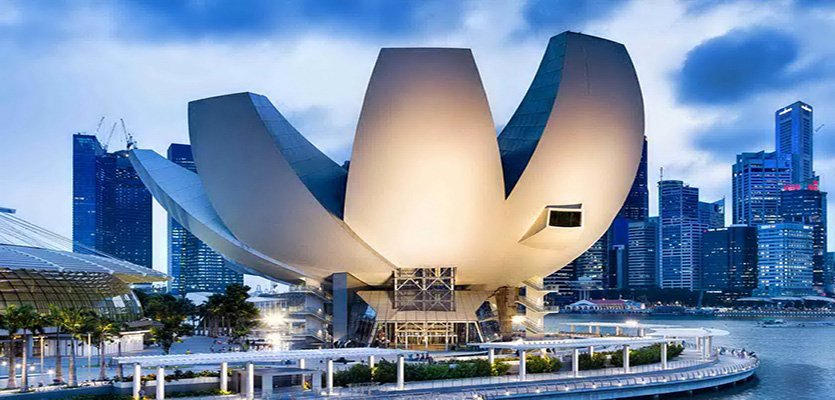

- Spain
 Spain
Spain United Arab Emirates
United Arab Emirates United States of America
United States of America Malaysia
Malaysia India
India Great Britain
Great Britain United States of America
United States of America United Arab Emirates
United Arab Emirates- Singapore
Modern architecture has continued into the 21st century as a contemporary style, especially for corporate office buildings. In a broader sense, modern architecture began at the turn of the 20th century with efforts to reconcile the principles underlying architectural design with rapid technological advancement and the modernization of society.
The functional and formalized shapes and spaces of the modernist movement are replaced by unapologetically diverse aesthetics: styles collide, form is adopted for its own sake, and new ways of viewing familiar styles and space abound. Classic examples of modern architecture are the Lever House and the Seagram Building in commercial space, and the architecture of Frank Lloyd Wright or the Bauhaus movement in private or communal spaces.
The finished visual appearance of buildings that exhibit the many deconstructivist "styles" is characterised by a stimulating unpredictability and a controlled chaos. Today, environmental sustainability has become a mainstream issue, with profound affect on the architectural profession. Many developers, those who support the financing of buildings, have become educated to encourage the facilitation of environmentally sustainable design, rather than solutions based primarily on immediate cost.
There has been an acceleration in the number of buildings which seek to meet green building sustainable design principles.
 1
1 3
3 5
5 7
7 9
9